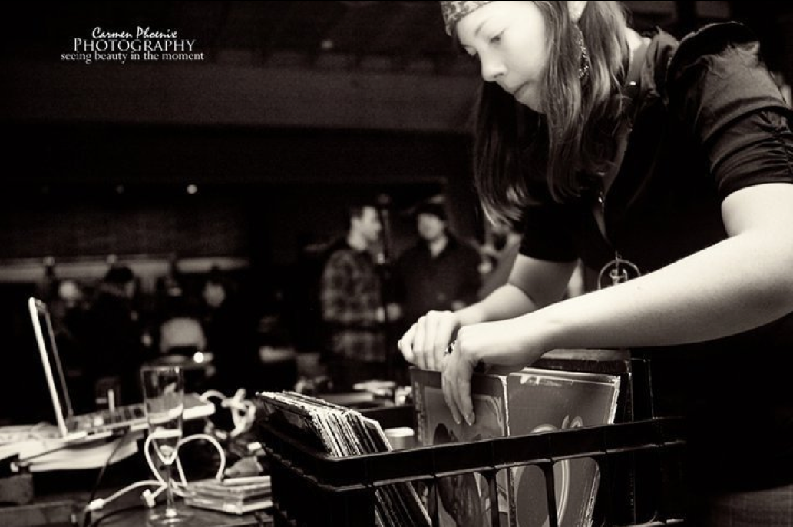

I want to stand as close to the edge as I can without going over. Out on the edge you see all the kinds of things you can't see from the center.
Emily graduated from Portland State University with a concentration in Advertising and Marketing, she also minored in Japanese. When she isn't working or in school, she likes to tango, draw, and keep up on all things ad industry related.